Climate, Culture, Materials
Shaping Buildings for the Humid Tropics
Climate, Culture, Materials
Patti Stouter, ASLA, First edition, November, 2008
Online version available at www.earthbagbuilding.com. Please share these self-help guidelines and let us know how to improve them.
Introduction
Buildings for hot-humid climates should be comfortable in heat and dampness. The humidity is usually above 60% and often nearly 100% in many regions. Simple, low-cost buildings can be cool, dry, and mold-free if they are carefully planned.
Buildings in other areas have conquered cold and dangers like earthquakes. These same new buildings are often uncomfortable and overpriced in the tropics. Large areas in the tropics, like much of central Africa and central South America, are free from serious earthquakes or tsunamis. People in the tropics have to conquer torrential rains and termites. They shouldn’t throw money away building for a hazard that they don’t have.
People also live differently in the tropics than in colder regions, and differently than they did 100 years ago. Old traditional buildings don’t fit the way they live now, because cultures have changed. New buildings should fit the ways people live in the tropics.
This booklet and its sequels, Earthbag Building in the Humid Tropics and Simple Earth Buildings for the Humid Tropics have some guidelines that can help you plan smarter for your beautiful and challenging part of the world.
A thatch and earthbag performance building in South Africa.
A modern apartment building in Cameroon
Buildings For People
Old buildings responded to the weather, the economy, and the people. The relationships and work patterns of the people lasted longer than their buildings. The process of making buildings taught young people how to behave and to understand their world. It was a basic personal skill, so houses seemed like a part of their own bodies.Much has changed, and old shapes may no longer work with how people live today. People move, get different jobs, but expect houses to last. People spend much more time inside, need more room for belongings, and may need to lock up their houses.
How do people use buildings? In many city areas people still spend a lot of time outside and want porches or pavilions that shade and shelter them from rain. But they also want a good wall or fence to keep them safe.
Many people outside of the biggest cities still prefer to cook over wood fires. This is not just because they lack a ‘better stove.’ Wood may be cheaper, or free. In some places small fires burn inside to give light and to keep the mosquitoes out and preserve roof rafters and thatch.
Separate wash and cooking buildings are often used to keep moisture and heat out of the main building. Showers, laundry areas, and kitchens can be located where breezes will blow extra moisture and heat away, or can be separated by breezeways. Locating them within the same walls may be less costly, but they could have outside access or be separated from the rest of the building.
|
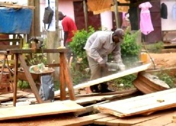 An outdoor workshop for a craftsman |
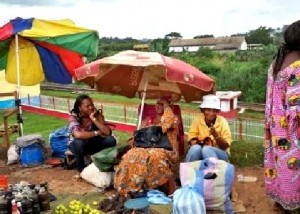 Selling and visiting outdoors |
Buildings also have meanings. The only way to find out what they are is to ask the locals. Show them photos of traditional building details or styles. Ask what they think of them, and how these kinds of buildings make them feel.
|
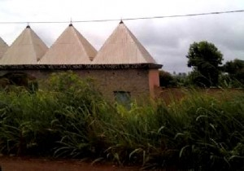 oofs of the powerful In northwest Cameroon |
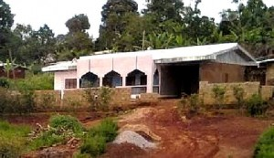 An Arabic arch motif for religion or ethnicity? |
A doorway at the mosque in Djenne, Mali
Among some people pinnacles or buttresses added to courtyard walls symbolize protection because they look like the ancient shrines called ‘pillars of the dead’ and the pinnacled mosques. These sloping pier shapes could be easily used in a new building.
Many peoples had round buildings until concrete block made them too difficult to build. To some round buildings may feel more like home, and remind them of their village background. Others may now prefer rectangular houses because these are the house types of ‘rich people’.
|
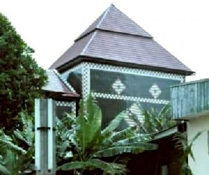 A tiled building stays bright without refinishing, near Bamenda, Cameroon |
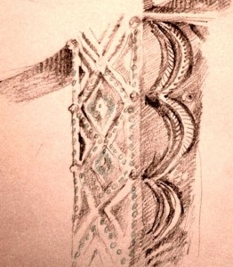 An interior carved earthen pillar from Niger |
People’s houses reflect who they are. They try to make their houses attractive by how they finish doors and windows or how they paint. Many traditional house decorations are very beautiful and make life more pleasant for those who live in them.
Planning for Comfort
Buildings in hot-humid climates need to be different from those in hot-dry climates. Heavy buildings can moderate the temperature in dry areas. In places where the climate
alternates between dry and wet seasons, heavy buildings are comfortable in the dry season, but during the rainy season are damaged by mold growth caused by condensation. Buildings
in humid climates are also subject to more intense attack by insects, and materials rust and decay much more quickly than in other environments.
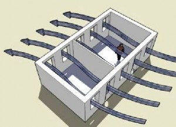Hot-humid inland areas of the world have high humidity and temperatures that rise and fall slightly every day. In the warm and humid zone of central Africa, southern Asia, and northern South America temperatures go from 75- 908F, and the humidity may be frequently between 90 and 100%.
Breezes in high humidity allow people to feel cooler because of evaporation from their skin. This is why ceiling fans make people feel cooler. Breezes also replace indoor air with fresh, keeping humidity levels from building up as people exhale both moisture and heat. But when the temperature of air is higher than skin temperature, the “cooling effect by evaporation is not possible even though the relative humidity is less than 100% “
Buildings that rely on natural qualities for comfort need to be thoughtfully planned. Their location, orientation, and plants nearby matter. They also need to be shaped to avoid direct
sunlight and catch breezes. Buildings that use the following strategies can be comfortable:
VENTILATION:
➔ Catch the breeze: Locate on a hill or raise above the ground, at a 20- 408 angle to the prevailing breezes.
➔ Don’t block the breeze: Spaces uildings out, and add breezeways in them. Build 18 m downwind from a 3 m height building to allow breezes in.5
➔ Make rooms breezy: Each room needs 2 exterior walls, with many windows or vents, including low openings. Verandahs with outside stairs obstruct
breezes much less than interior halls.
➔ Make outdoor areas breezy: Keep them open to warmer season breezes, and if possible protected from storm and cool season winds.
➔ Use vents as well as windows: If necessary use mosquito netting curtains inside walls of openwork or vent blocks. Windows or shutters on one or two sides can block breezes on cool evenings.
➔ Screen porches or verandahs to allow openings to unscreened windows in the center of the building.
|
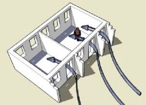 Wing-wals can direct wind |
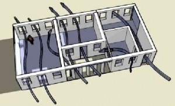 Porches’ large openings ventilate adjacent rooms |
➔ Pul breezes in with wing-walls, and shutters or casement windows that open outward. Although jalousie windows allow ventilation by keeping rain out while they are open, casements under an overhang can be helpful to catch breezes. A sturdy adjustable shutter that pivots vertically in the center of the window sill may be able to secure a building and catch breezes too.
SHADING:
➔ Keep sunlight off of building walls: After aiming the building to catch the breeze, try to face the long sides (with most of the windows) towards the south and north so the roof overhang shades walls and windows in the middle of the day.
|
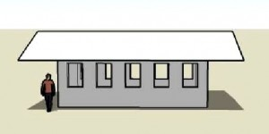 Roofs shade walls in the middle of the day |
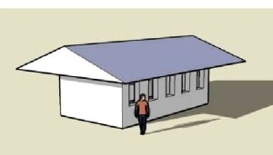 But let in the lower afternoon sun |
➔ Shade in the afternoon: Keep west and east sides short to let less of the hot, low angle morning and afternoon sun heat up walls, especially during the hottest season. Be sure you are considering whether the sun is in the northern or southern sky at this time of year.
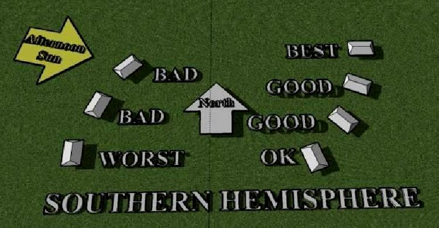
Best directions for buildings with least need for vertical screens to prevent overheating.
Vertical screens, shutters and slit windows help keep low angle sun out
➔ High ceilings let hot air rise above the people so the room feels cooler to its occupants.
➔ Cover openings on west and east ends. Use few windows and doors. For openings use vertical sunscreens, climbing vines, or shrubs to reduce heat gain on western walls.
➔ Use white or light colors that stay cooler on sunny walls, roof, and pavement.
PLANTINGS:
➔ Let plants cool you. Tall trees can shade roofs and reduce temperatures. Trees, shrubs and vines that shade the ground or buildings in the afternoon reduce the local temperature. Plants cool by evaporating moisture as well as by shading, like natural air conditioners. Use trees like palms that are open underneath on the breezy side.
➔ Don’t make sun traps of heavy walls around sunny paved areas. Locate plantings between walls and other paved areas when possible.
➔ Use greenwalls for breezy west walls. Vines block breezes and will grow
over openings. A green wall of low-growing plants can lower the wall temperature. Plants can be planted into concrete vent blocks filled with soil after construction. The wall itself should be waterproof, because the wall may need some irrigation.
➔ Funnel breezes with building walls or plants: Breezes are slowed by friction. If buildings must be close together, use them to aim and speed up the breeze.
Nearby buildings can squeeze breezes into a narrower path speed them up
INSULATION:
➔ Keep attic heat out by using a vented roof and an insulated ceiling. If air can flow up inside the roof and out vents above, the roof stays cooler. Reflective foil draped across the rafters help, or insulation made of materials that don’t soak up humidity.
➔ Keep coolness out of the wal s: Use insulation at the base of masonry walls to stop them being cooled by the soil below, which causes condensation.
➔ Use light-weight or well-insulated materials so the building won’t feel hot.
Design With Nature
There are two different ways people look at the landscape they build in- as a problem or as a gift. People in dry or cold areas improve their comfort by buildings and land shaping that control the climate. The land is a problem to be overcome.
Living in the humid tropical area should teach that nature is a gift. True comfort comes from breezes which we cannot control, and the shade of a multitude of plants. The best locations are often hilltops with shallower or fragile soils. Construction in hot, humid areas needs to cooperate with nature to use the available materials, breezes, soils, and plants.
People in temperate regions can prepare for unpleasant weather by removing trees to let the sun in, stockpiling fuel, and building larger, sealed homes. People of the drier hot regions prepare by digging fountains and pools, and building thick house and courtyard walls to keep hot, dusty winds out. Today people from most parts of the world define buildings as the spaces they enclose and control.
A corridor defined by a brick screen or jali, by Sri Laurie Baker
In hot, humid areas trying to shut out the unpleasant weather does not work well. Electricity for fans or air conditioning is unreliable and condensation from humidity causes more problems than the heat. Opening to the breezes is much more effective. Peoples of hot, humid regions can define buildings as roofs with spaces blending from indoors to out through screens
instead of walls, allowing breezes in. A sense of security and enclosure may come more from people or a compound or courtyard wall than the building walls themselves.
Traditional settlements in humid regions developed from farmers who built scattered houses. In the densest jungles these were transient settlements in small openings. The roof was more important than walls, and the encircling forest provided shade and protection. Because of the relative abundance of food and building supplies, societies in warm humid regions may have placed more emphasis on day to day experience than planning for future events. Relationships and interaction could be valued more than material objects. Since weather could not be completely shut out it influenced the timing of daily activity.
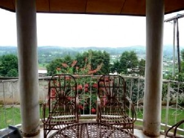No single building can satisfy all the design strategies for comfort listed above. To create a good climate- responsive building one must compare them and choose which goals are most important for the particular users and location. How many months is it too hot, and how often too cool? Is rain with driving winds a major problem, or constant humidity?
Wind directions are very important. Ask neighbors, or people who work there, about the breezes. Find out when they blow, how strong they are, where storms come from. Opinions of the people using the buildings are important. Average information may not be accurate for your site. Ask what times of day and seasons are most uncomfortable, and why. Mention buildings or rooms they are familiar with that have different exposures, and ask which ones are most comfortable.
Plan buildings differently for nationals and foreigners. Acclimatized people in hot regions can tolerate hotter and more humid conditions, but cannot tolerate weather that is as cool. People from temperate or subtropical areas living short-term in the tropics will suffer more from heat and humidity than the locals do. Those used to air conditioning may only tolerate very narrow ranges of temperature and humidity. Residents of hot humid areas are more used to having damp skin, and enjoy the cooling that brisk breezes bring indoors.
A curving screen wal by Laurie Baker
Whether they are acclimatized or not, people who can control their environment feel comfortable in a wider range of conditions. Provide access to a window or vent for each person, and make shutters or blinds adjustible. Each of us is happier if we can see why it is hot or damp, and modify the amount of sun or breeze entering.
Plants
Cities are hotter than the countryside because all the pavement and walls heat up in the sun. Any shade or green surfaces you can add help to cool the area. Locations near parks or planted areas are often much cooler, or on the edges of streams or lakes. Some people use green roofs to keep buildings cool- thin layers of lightweight rock added on top of a waterproof membrane, planted with special drought tolerant plants. In areas of heavy rainfall these might need drainage added under the growing media.
Preserve as many trees as possible to shade your building and yard. They can be limbed up to allow breezes underneath, but will need protection. The soil beneath their branches must not have heavy stacks of materials or trucks parked on it. Ground level cannot be changed beneath existing trees without damaging them, unless retaining walls leave most of their roots undisturbed. It is simpler to leave the ground near trees untouched.
Australian pine lowers the water table where it grows thickly
New plants can be added to increase shade but will need time to grow before they help much. Be careful what new plants you choose. Many attractive plants that nurseries sell are used all over the world because they are easy to grow. Some of these are invasive exotics- plants from other areas that reproduce too vigorously, squeeze out native species, and are very hard to get rid of.
Many native plants suit the climate and soils of an area perfectly, and are useful as well. Some, like iroko and mahogany are becoming rare because they have been overcut, and could be valuable in the future. Some provide edible fruits or medicine or gourds for making musical instruments. Sometimes their seeds or cuttings can be taken for free. Keeping a wide variety of plants growing in an area makes it a richer place for people as well as animals.
Preserving existing plants is also the best way to keep the soil that you will need for growing new plants in the future. The preferred hill sites often have shallower soils than lower slope areas. And the soils of some parts of the humid tropics are among the most perishable of any on earth. In the tropics the processes of decomposition are so quick that natural fertility washes out and water-holding material rots and disappears.
Flatten or prepare only enough land to build on and work on right now and leave plants on the rest. If heavy machines will be used, put stakes or mesh fences around the work area.
Big machines are easiest to use with lots of room to turn and back up- this will mean large areas bare and hard-packed. Sometimes large machines cost too much in terms of preventing damage to trees, repairing the soils, and replanting and waiting years for shade afterwards.
If people remove all the plants and scrape the soil into a stack to use later, soil degrades. New organic materials will have to be added. It may never support as rich plant life as it did before, because many native plants depend on soil organisms that die in stockpiles. It is not always possible to ‘restore nature’ after development.
Tall retaining walls limit ventilation
If people want flat outdoor spaces to use on hillsides, they will need to build retaining walls to terrace their land. Walls are expensive, can soak up sunlight and warm the area, and they don’t let breezes through. This process will also destroy all the trees or shrubs on the area.
Hills can be stabilized by staking logs in place until plants grow
One alternative to retaining walls is to carefully plant steep slopes. New fabrics can be used or scrap wood from pallets can be staked across the slope to hold steep hillsides in place until the plants grow. Logs or bundles of twigs (called fascines) staked in a level row will also hold the soil in place.
Live branches freshly cut that are used as stakes can also grow. Steep planted slopes are best in less crowded areas because they take more room than retaining walls and can’t be walked on.
Keep walls and slopes smaller by stretching long, narrow buildings along the side of a hill instead of diagonally across, or running up and down the slope. Or better, raise the building up on stone or earth piers or arches and let the rain run undisturbed under it. Air flowing into a building from near the ground on the shady side can cool the building off significantly.
Water and Soil
An important side benefit of preserving existing plants is that rain will soak into land. Try to leave some flatter damp spots below your buildings and roads. Natural wet areas have special soils and soak water up and release it slowly into the soil and streams. When people throughout a region all drain wetlands, the average temperature in an area can go up, and the amount of rainfall can decrease
Clean water is a precious resource
People who live where rains are heavy can still suffer from lack of water during dry seasons. Where rain is allowed to soak in, lakes, streams, and wells have more water during more of the year. If heavy machines drive on land it becomes deeply compacted. On these areas, and pavement and bare yards, rain can’t soak in and more water goes more quickly to streams and causes floods. Often neighbors’ land downhill and downstream are damaged.
Plants can also clean water. Paved areas used for cars and animal pens pollute rainwater, but shallow ditches with fast-growing plants can clean it before it runs into streams or cisterns. If you have streams nearby, try to leave thick growing plants next to them. A 10-30m wide strip does a lot to keep streams clean. If you must use concrete gutters to save stormwater, let rain run off of your pavement and hard dirt areas all along their edges into plantings. Place some gutters below to gather the water, and your cistern will stay cleaner.
Plants can also be used to clean waste water. Gray water from showers and bathroom sinks does not usually contain much grease or chemicals, and has few germs. If it is allowed to flow straight into a perforated pipe in a plant bed it is not dangerous, as long as they are not root or leaf vegetable crops. The pipe and plant beds must be long enough for the volume of water, and plants chosen must tolerate the soaps used.
Water is very powerful, and it moves more quickly on bare ground than through plants. If plants do not grow quickly on a hill, they may not be able to grow later. Once gullies form, plants can’t grow in the exposed subsoil and rock, and gullies can spread until a hillside collapses.
Once gullies start they are very hard to stop
Always direct runoff away from bare soil. A small ditch at the top of a hill that directs extra water away from the steepest places may prevent a gully from starting. Places where water runs together and speeds up are most often damaged during construction. Ditches that run down a hillside need small check dams of stones or straw bales to slow the water.
It is a good idea to place a silt fence of filter fabric along the downhill side of building work. If siltation fabric is not available, bundles of small branches called fascines or straw bales can
9 Sahra, Arizona Board of Regents (2001). What Is Gray Water? Arizona Department of Environmental Quality Web site at www.sahra.arizona.edu/programs/water_cons/tips/re-use/gray.htm
also keep dirt from washing out. The lowest part of a work site may be the most important place to protect. Bales of straw or bags of rice hulls staked at an outlet from the lowest part of the work site can clean water if it doesn’t overflow past them. A shallow settling basin may be helpful on a larger site.
Lightweight Building Materials
An old reed and thatch building in Cameroon
A building should last long and be comfortable. This can be difficult in the tropics, where termites or ants even emerge through concrete floors to eat furniture and walls. Paints and metals exposed to the sun and rain break down quickly. But it may be as important to find out how comfortable materials will be in a building.
One of the most important goals is to build of “lightweight and low heat-storing materials” so there won’t be much heat radiated towards the inside.10 Traditional building materials like wood, grass, palm, and bamboo are cheaper as well as cooler than masonry. But because they rot easily or are eaten by insects, they must be used carefully. Often they are only used on second stories or in buildings raised up above the ground on some sort of piers.
|
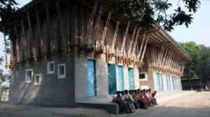 Wood house on an earthbag foundation in |
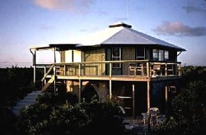 The award winning Handmade METI school in Bangladesh is built of bamboo and earth |
A first floor classroom in the Handmade School
Even located on upper levels, wood or bamboo posts covered by wood boards or sheetrock may rot too quickly because they never can really dry out. Use a single layer of boards or bamboo for walls and locate rooms that need privacy at opposite ends of the building.
Bamboo is cheap since it grows quickly, being ready for building after 3- 6 years. Bamboo roof rafters can also span much further than wood. If bamboo is dried well and then given asimple smoke treatment it can last a very long time as long as it is not rained on. Bamboo works best inside, or under a wide roof overhang. It can be bolted, if the inside is packed with a little concrete and let dry before the bolt is tightened all the way.
|
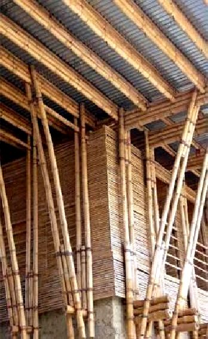 Innovative bamboo framing at the Handmade School |
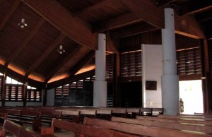 Breezy wood louvers in a Yaounde, Cameroon |
Basketweave wood shutters
Even if wood is not chosen for structure or walls it can be used for breathable wooden louvers, shutters, or railings. Ask older people in the villages which local woods are more durable.
Wood can also be smoked to discourage termites and mold. Wood may be available in unusual forms. Waste shipping pallets have been used to produce shutters and low-cost roof truss structures.12 Small diameter wooden poles may also be freely available or less expensive because they do not require milling. They are stronger than milled wood per cross-section area, and can be more resistant to rotting and termites.
Other lightweight materials include reeds and grass, and wood as basket work. These are not used often in modern buildings for exterior walls. They may be used for upper stories, to screen large openings in exterior walls, or as separate shutters.
Traditional reed thatched roofs are cool, quiet, and last up to 40 years. Some people have begun making thatch in modular units assembled on the ground, and then installed more quickly. But moldy thatch in the most humid areas can cause health problems.
Many people prefer galvanized metal roofs because they won’t burn and keep rain out more completely for longer. Metal roofs are relatively inexpensive although they can be very noisy in a heavy rain and hot in sunny conditions. White, if available, is much cooler.
Rice hulls in bags to insulate
Natural materials can be used inside to provide sound or heat insulation. Sea grass, rice hulls, and coconut fibers don’t absorb much humidity. Sea grass is a type of seaweed that is harvested from beaches where it washes up and can be made into batts or pellets. It does not burn easily because of its natural high salt content.
Rice hulls, left over from growing rice to eat, also don’t burn very easily, and have an R-value of around 3 per inch.13 Sea grass or rice hulls can be used in breathable bags. Coconut fibers are sometimes made into thick mats, but need to be treated with a simple fire retardant like borate.
Mats below bags for ceiling
Any of these may work well under a metal roof. Wire or plastic mesh can be fastened between collar ties or under roof trusses to hold insulation in bags. Woven grass mats or fabric fastened below them would make an inexpensive, attractive ceiling. But the simplest way to keep rooms cool and quiet may be to bind reeds with wire or cord into thick flexible batts to use as an insulating ceiling that can be replaced periodically.
Comparing types of masonry
People want houses that last, don’t burn, and keeps insects, rodents, and thieves out. Stone and brick walls have been used for beautiful buildings worldwide. Many people build with concrete now, because these buildings seem modern, last a long time, and are cheaper and easier to build than brick or stone. They keep mosquitoes out better than wood buildings. For some people “Their dream house is of concrete, like the houses they see belonging to the rich. Even if they know they will sacrifice comfort and coolness during the day, or that they will never be able to afford that dream house, they do not care. They will wait for the day when they can have a ‘real house’…”
New earthblock building in Thailand
The majority of permanent buildings throughout history have been built of earth. It doesn’t burn, keeps pests and thieves out, is inexpensive and widely available. This flexible and beautiful
material is recently being revived and becoming more generally accepted and understood.
Earth buildings last well when maintained, and are less subject to overheating and dampness than stone or concrete. Earth walls don’t get hot or cool very quickly because earth insulates better than concrete.
Many countries are beginning to include earth buildings in their building codes. Unfortunately, some codes apply unnecessary rules and make buildings more expensive without being safer. If your area does not have a code, you are free to build strong but cheaply. The earth buildings common in wet countries, like the UK and Germany, have lasted hundreds of years without following building codes.
There are other ways to use earth, but you have to know enough to make a good choice. Buildings can be made of raw earth with cob walls or mud block, or compressed soil in rammed earth walls or compressed earth blocks (CEBs). The compressed earth can have some lime or cement or bitumen added to preserve it in the rain.
Raw earth buildings need to be protected from rain and flooding to work well in humid climates. A good roof and a dry base of stone or concrete are very important. Outside walls of raw earth that get rained on should be replastered every few years unless they have special coatings. In rainy areas damaging moisture can creep from the soil up walls, even through concrete. Buildings raised 50 cm above the ground with a good vapor barrier are drier.
Since heavy masonry, like stone or concrete, warms up slowly and cools down slowly, damp air will wet it frequently. Very humid air is near its dew-point. Every time that damp air warms up just a little more than a building, moisture in it condenses on the slightly cooler surface. Heavy concrete walls in very humid areas become frequently damp from condensation, causing algae or mold growth. Raised floors and a good vapor barrier will not prevent this. Solid earth walls will receive less condensation than concrete because they are less dense, and because they absorb more humidity.
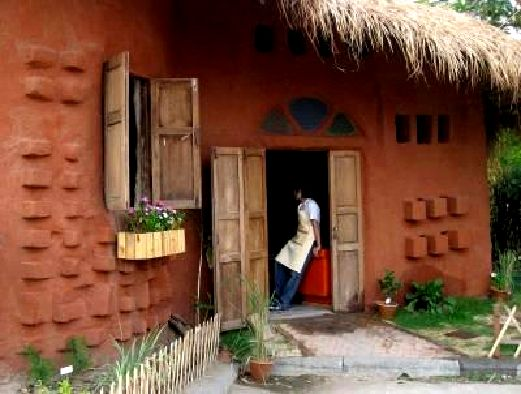
Many people don’t realize that raw earth buildings are healthier than concrete in high humidity. They never absorb enough water to let mold grow on them like concrete does. The most dampness they absorb from the air (5- 7% by weight) is not enough to let insects or mold grow (which need between 14 and 20%).
Materials are comfortable in hot, damp weather if they don’t hold much heat or if they are very well insulated.17 This is how common building materials compare at holding heat or cold, and insulating:
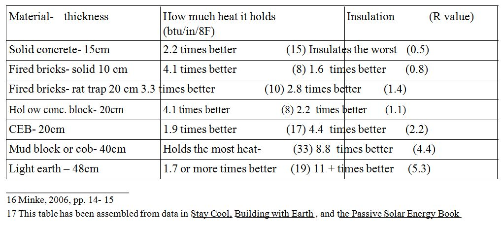
The last material on the list is a relatively new combination of local soil and naturally ocurring rock materials that works well even in hot humid weather. Light earth, like cob and mud block, modifies humidity. It can be formed into blocks, used in rammed earth walls, or in what has been called the cheapest building method on earth, in earthbags, a construction technique like sandbags.
Light earth contains lightweight gravels like pumice or scoria. These broken volcanic rocks are available at reasonable costs in many areas with active or dead volcanoes. They differ somewhat in insulating value. Any pumice added to earthbags will reduce the amount of heat it holds and increase its insulation value. Other light materials include perlite, which may compact with time, and vermiculite, which absorbs too much moisture to be useful in humid areas. Expanded clay is manufactured by heating, and may be too expensive.
Earthbags are built by stacking, with
conventional doors and windows between
Building with Masonry
The cheapest and easiest way to build a solid building is with a system called earthbags. If nearby pumice or volcanic gravel can be added, it may also make the most comfortable building. Flexible form rammed earth or earthbag uses the strength of woven fabric bags while it dries. Because it is tamped, it combines some of the properties of rammed earth without the need for heavy forms.
Earthbag is finished with a plaster layer of earth materials and/ or cement or lime. When dried, the earth is strong enough without reinforcement if it is built in the right shapes and sizes. This kind of earthbag building works well with between 5% and 30% clay,18 and is the most suited to hot and humid climates. Earthbags can also be built of loose sand, gravel, or soil without clay, if they use some bamboo, wood, or steel reinforcement, or have a plaster of cement stucco- better techniques for drier regions.
Brick, concrete block, poured concrete, and earth blocks are much more expensive than earthbag. Poured concrete and CMUs contain 25% expensive Portland cement. Even earth construction of cement stabilized mud block or CEB are 5% Portland cement. These also require more accurate mixes of materials and better trained labor than earthbag.
Common fired bricks can make versatile thin walls. Solid brick works best where walls are shaded by plants or other buildings, because they do not insulate well. Rat trap bond stands bricks on edge around a hollow center. It uses a little more brick than a solid single layer wall, but in parts of India allows a building temperature inside 58 C lower than outside.
Low-fired bricks absorb more water than common fired brick. They are cheap, often fired with waste rice hulls. They can be used for inside walls, or outside with special finish coats.
Brick can be formed into beautiful openwork “jali”, as Sri Laurie Baker created in India. Jali lets in subdued light, allows ventilation and glimpses out, but keeps the inside private and secure. Small scale jali keep driving rain out, but may cost only 10% as much as a window.
|
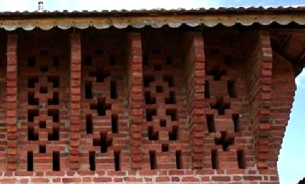 A beautiful wal of brick jali by Baker |
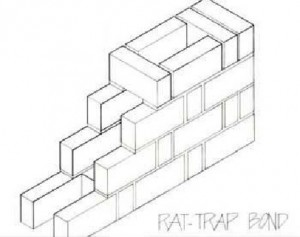 Rat-trap bond brick technique |
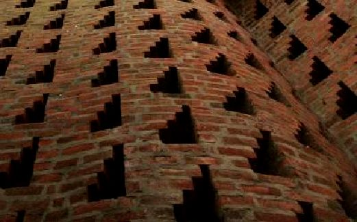
- Another jali pattern in a curving wall by Baker
A Cinva-Ram hand press for making compressed earth block
Compressed earth blocks (CEBs) use earth with about 5- 10% clay, often with a small amount of bitumen or cement to make them waterproof. They are usually 2.5 times thicker than fired bricks, but they insulate better and moderate humidity better than fired bricks. Because they are less expensive than fired brick, and can be produced by individuals with simple equipment, these blocks are improving living conditions in many countries.
|
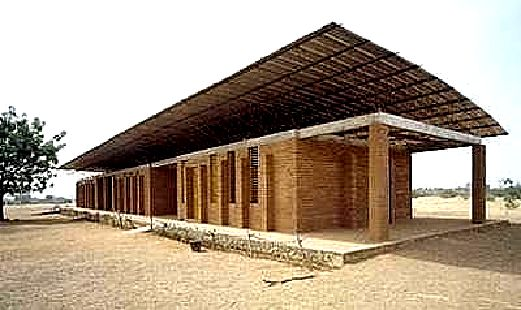 The award winning Grando School in Burkina Faso built of CEBs |
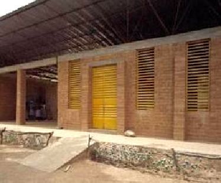 Piers between windows allow good ventilation with earth block |
Slatted screens bounce light into
the rooms
Unbaked mud block (or adobe) is usually built by masons, but is twice as thick as CEB walls. It requires special water resistant plaster layers on exterior walls that must be renewed every few years. Historic structures have been built up to 8 stories.
Solid earth can be rammed or built as cob. Either of these may be difficult to build in wet climates because they dry slowly. Rammed earth walls need large forms to hold the earth in, can be very strong and waterproof, and have been used in China and Nepal for centuries. They are strong enough to build in multiple stories. Cob walls can be built without forms, hold at least as much heat as adobe, but must be very thick to be strong, and so may have more condensation problems than thinner CEBs.
The most common solution for those with enough money in warm, humid areas is to use weak, hollow concrete masonry infill between poured concrete posts and beams. These buildings don’t heat up as much as solid masonry, and if painted with waterproof paints the inside walls can be scrubbed. In the US and Europe hollow CMUs are made strong enough for structural use, or poured solid with concrete. The lighter, weaker blocks available in hot regions, sometimes called sand cement blocks, are better at insulating.
Hollow CMU walls with concrete posts
Usually the blocks are built first by skilled masons, leaving gaps for columns. After the block work is done, forms are added and steel reinforced concrete columns and bond beams are poured. This can be very strong in areas subject to earthquakes.
Pouring a concrete bond beam on a block wall
Increasing prices of steel and concrete, and unreliable concrete supplies complicate this type of building. In Africa, South America and Asia cement may be too valuable a commodity for common use. In the US a laborer works about half an hour to earn a bag of cement. In other countries it may take a laborer 3 days or more to earn the same bag. In many parts of the world Portland cement is a luxury item.
It is common practice for workers to use less concrete in the mix, and save bags out to use at home or resell. Concrete may not be right for places where public officials expect gifts, workers often ‘borrow’ supplies, and people are accustomed to more forgiving rule-of-thumb type work than high precision measurement.
Maintenance costs of repainting and scrubbing interior walls need to be considered before building with concrete. Additional intangible costs will also include discomfort, belongings ruined by mold growth, and health damage from living with mold. Overall concrete buildings may not be the best choice for hot and humid climates.
Baker’s Loyola Hostel
Buildings in warm humid areas can be built well and beautifully and without great cost. Some new ideas can be combined with ancient traditions of responding to weather.
New buildings can shelter people in ways that they need without abandoning all the beauty of their traditional building shapes. Asking about the past can enrich the future. May we all keep the good and the beautiful from our past.
For more information:
Examples of layouts and construction suggestions for building light earth with earthbag are in Earthbag Building in the Humid Tropics. Sketches of house shapes for non-hazardous areas are in Simple Earth Buildings for the Humid Tropics. Both of these will be available at www.earthbagbuilding.com.


{kind=link}
{kind=link}
{kind=link}
{kind=link}
{kind=link}
{kind=link}
{kind=link}
{kind=link}
{kind=link}
{kind=link}
{kind=link}
{kind=link}
{kind=link}
{kind=link}
{kind=link}
{kind=link}
{kind=link}
{kind=link}
{kind=link}
{kind=link}
{kind=link}
{kind=link}
{kind=link}
{kind=link}
{kind=link}
{kind=link}
{kind=link}
{kind=link}
{kind=link}
{kind=link}
{kind=link}